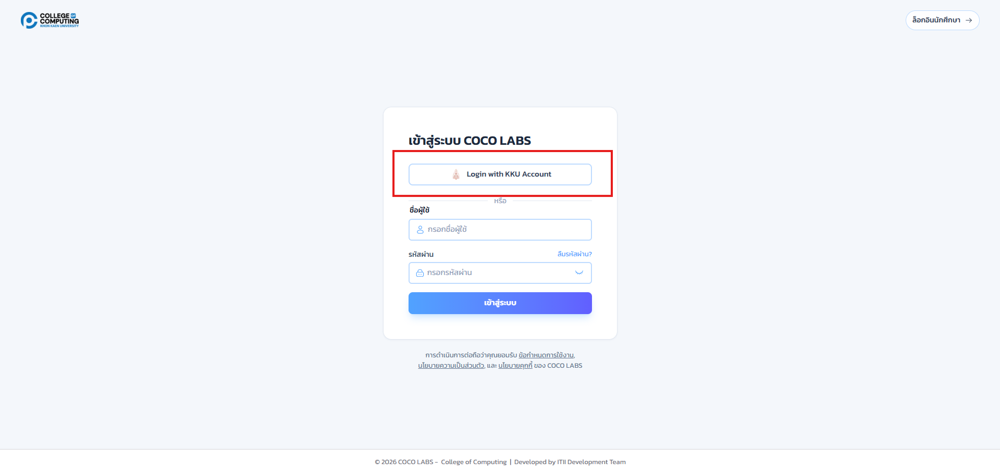
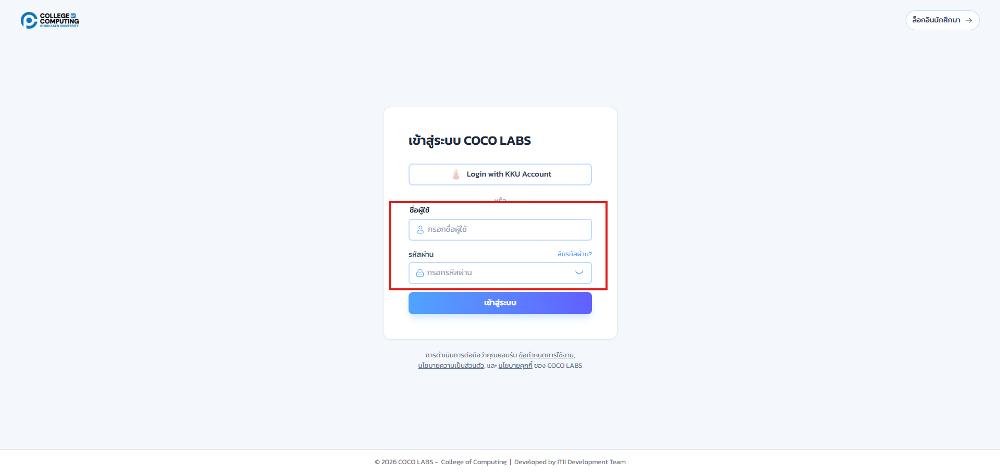
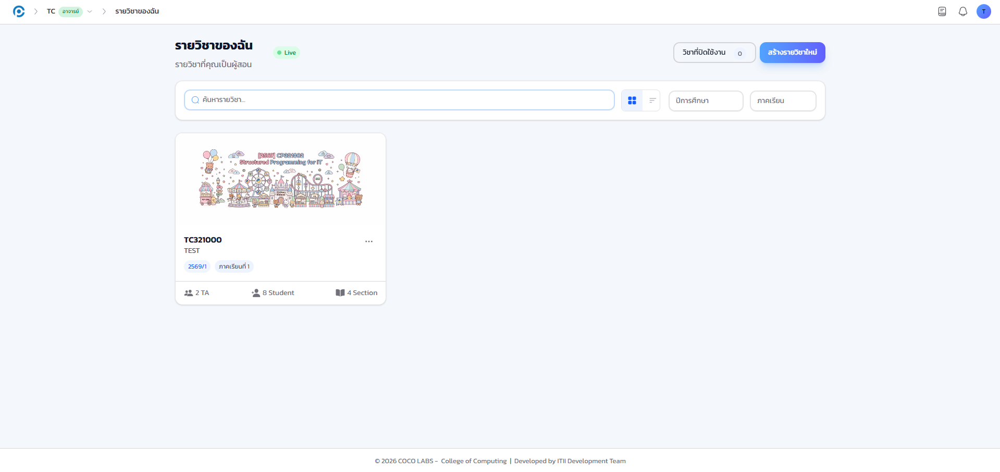
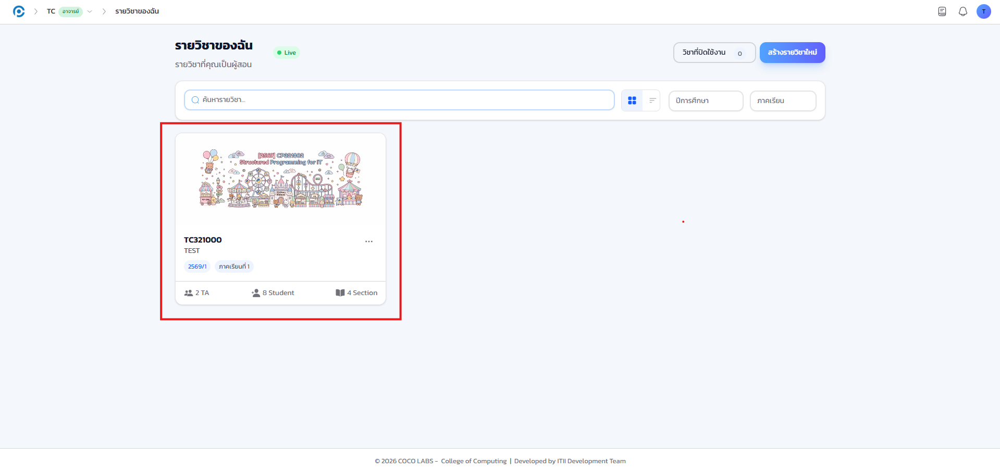
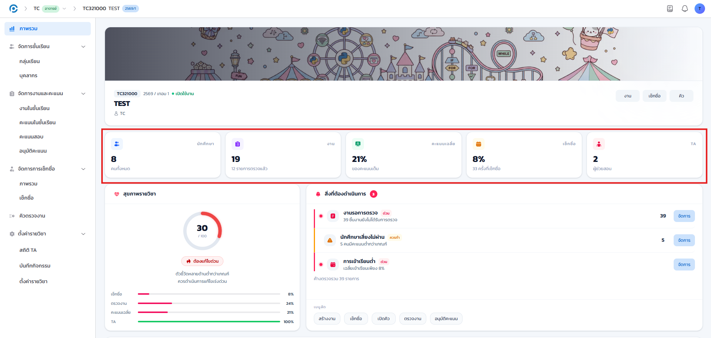
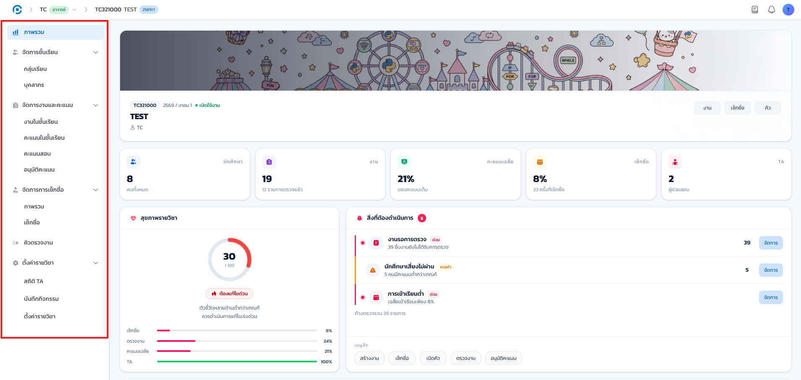

4.1 เกี่ยวกับคู่มือฉบับนี้#
ส่วนนี้ของคู่มือจัดทำขึ้นสำหรับ อาจารย์ผู้สอน (Instructor) ผู้ใช้งานระบบ COCO LABS เพื่อให้สามารถใช้งานฟังก์ชันต่าง ๆ ได้อย่างถูกต้องและครบถ้วน เนื้อหาอธิบายเป็นขั้นตอนพร้อมภาพหน้าจอจริงจากระบบ
ภาพประกอบทั้งหมดถ่ายจากรายวิชาตัวอย่าง และได้ปกปิดข้อมูลส่วนบุคคลของนักศึกษาและผู้ช่วยสอน (ชื่อ-สกุลและรหัส) ด้วยการเบลอภาพเพื่อความเป็นส่วนตัว
4.2 สิ่งที่อาจารย์ทำได้ในระบบ#
ในฐานะอาจารย์เจ้าของวิชา ท่านสามารถบริหารจัดการรายวิชาของท่านได้ทั้งหมด ครอบคลุมการจัดการหมู่เรียนและกลุ่ม การมอบหมายสิทธิ์ให้ผู้ช่วยสอน การสร้างงานและให้คะแนน การอนุมัติคำขอแก้ไขคะแนน การจัดการคะแนนสอบ การเช็กชื่อเข้าเรียน ระบบคิวตรวจงาน การติดตามผลงานผู้ช่วยสอน การตั้งค่ารายวิชา ตลอดจนการตั้งค่าบัญชีส่วนตัว
ระบบแสดงเมนูตามสิทธิ์ของผู้ใช้ อาจารย์เจ้าของวิชาจะเห็นเมนูครบทุกรายการ ส่วนผู้ช่วยสอน (TA) จะเห็นเฉพาะเมนูที่ได้รับสิทธิ์จากอาจารย์เท่านั้น หากผู้ช่วยสอนแจ้งว่าไม่พบเมนูใด กรุณาตรวจสอบการมอบสิทธิ์ตามที่อธิบายไว้ในบทที่ 6
4.3 การเข้าสู่ระบบ#
เป้าหมายของขั้นตอนนี้ เข้าสู่ระบบด้วยบัญชี KKU และไปยังหน้ารายวิชาของฉัน
- เปิดเว็บเบราว์เซอร์แล้วไปที่ที่อยู่เว็บของระบบ ระบบจะแสดงหน้าเข้าสู่ระบบ
- คลิกปุ่ม KKU SSO ซึ่งเป็นปุ่มหลักที่แสดงอยู่บนสุดของหน้า เพื่อเข้าสู่ระบบด้วยบัญชี KKU Mail ผ่านระบบยืนยันตัวตนกลางของมหาวิทยาลัย

ใต้ปุ่ม KKU SSO ยังมีช่องชื่อผู้ใช้และรหัสผ่านเหลืออยู่ เป็นช่องทางสำรองสำหรับบุคลากรที่ยังเข้าผ่าน KKU SSO ไม่ได้ ไม่ใช่ช่องทางหลักของระบบ

คู่มือฉบับก่อนหน้าระบุว่ามีปุ่ม Google หรือ GitHub ให้เลือกคู่กับชื่อผู้ใช้และรหัสผ่าน ปัจจุบันไม่ใช่แล้ว KKU SSO เป็นช่องทางหลักเพียงช่องทางเดียวของอาจารย์ผู้สอน ส่วนช่องชื่อผู้ใช้และรหัสผ่านเหลือไว้เป็นทางสำรองเท่านั้น รายละเอียดการเข้าสู่ระบบทุกช่องทางดูเพิ่มเติมได้ที่บทที่ 2
4.4 หน้ารายวิชาของฉัน#
เป้าหมายของขั้นตอนนี้ เข้าไปยังรายวิชาที่ต้องการจัดการจากหน้ารายการรายวิชา
เมื่อเข้าสู่ระบบสำเร็จ ระบบจะพาไปยังหน้า รายวิชาของฉัน ซึ่งแสดงรายวิชาทั้งหมดที่ท่านเป็นผู้สอน

- คลิกที่ การ์ดรายวิชา ที่ต้องการเข้าไปจัดการ

4.5 หน้าภาพรวมรายวิชา#
หน้าแรกของรายวิชาคือหน้า ภาพรวมรายวิชา ซึ่งสรุปสถิติสำคัญด้วยการ์ดสรุปด้านบน
- การ์ดสรุปสถิติ
- จำนวนนักศึกษา จำนวนงาน คะแนนเฉลี่ย อัตราการเช็กชื่อ และจำนวนผู้ช่วยสอน
- ปุ่มลัดงานที่ใช้บ่อย
- ทางลัดไปยังเมนูที่เข้าใช้งานบ่อย เช่น เช็กชื่อ ให้คะแนน

4.6 การใช้เมนูภายในรายวิชา#
เมนูการทำงานหลักอยู่ที่แถบด้านซ้าย จัดกลุ่มตามหมวดงาน เช่น จัดการชั้นเรียน จัดการงานและคะแนน การเช็กชื่อ และการตั้งค่ารายวิชา

โดยทั่วไปแต่ละฟังก์ชันมีทางเข้าได้หลายทาง ตัวอย่างเช่น การเช็กชื่อเข้าได้จากเมนูด้านซ้าย จากปุ่มลัดที่การ์ดสรุปสถิติ หรือจากปุ่มลัดงานที่ใช้บ่อยในหน้าภาพรวม เลือกใช้ทางที่สะดวกที่สุดได้ตามต้องการ